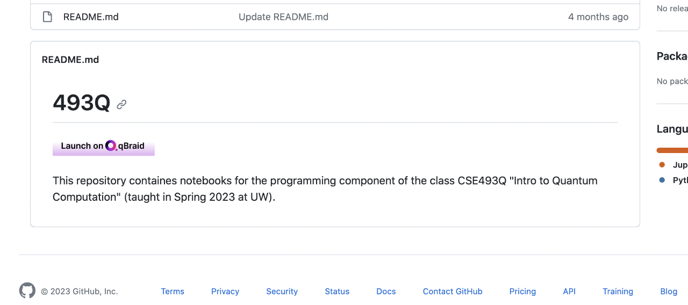
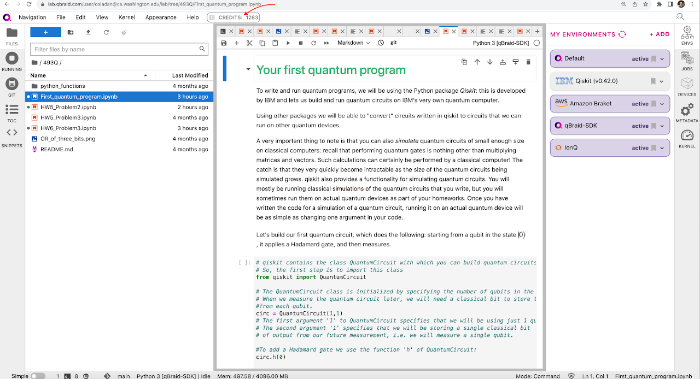
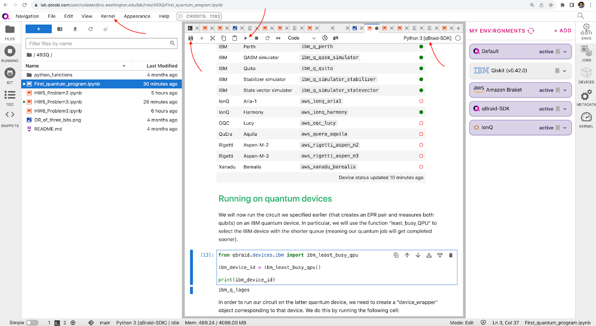

Quantum Programming tutorial with homeworks
This is a (more or less) self-contained resource that originated from this undergraduate quantum computing class. It is suitable to be integrated in an existing theoretical quantum computation class, e.g. in the format of one lecture together with a few accompanying homework problems.
This resource gets you started writing quantum programs and running them on quantum devices. It uses qBraid's platform, which allows the user to write the code once, and to run it on most of the available quantum devices in the cloud (IBM, Rigetti, QuEra, IonQ, Xanadu, OQC, IQM). The quantum code in this resource is written in Qiskit, but the same code can be used to run on all devices. The existing homework files can be edited, and of course you can also create new ones and easily share them with your class.
To get started:
Create an account on qBraid (or sign-in with Google).
Visit the Github repo for this tutorial, and import its contents into your qBraid account by clicking on the "Launch on qBraid" button in the README file. If asked to select a GPU, select the "Free" one, and then click "Start".

This should automatically launch "qBraid Lab" and populate your account with the desired notebook files. You should land on an interface that looks more or less like the image below. The imported files appear in the file directory on the left, as part of a folder called "493Q". You can double-click on the folder to see its contents.

How the platform works:
qBraid Lab is a platform that allows you to create and interact with Jupyter notebooks, and it includes features that are tailored to writing and running quantum programs. If you are entirely new to Jupyter notebooks (.ipynb files), these are a popular document type that combines text (Markdown), equations (Latex), and runnable code.

Double-clicking on a Jupyter notebook (.ipynb) from the directory on the left will open it at the center of the interface. A Jupyter notebook consists of "cells". You can run each cell within the notebook, by typing Shift+Enter, or by clicking on the "run" button at the top of the notebook. Each notebook cell runs within a "virtual environment". You can see the environment that is currently in use at the top right of the notebook. If you haven't changed anything yet, you'll see something like "Python 3[Default]". You'll be instructed to change this environment as you follow along the first tutorial notebook.
Every cell is editable. You can save your changes by clicking on the "save" icon at the top of the notebook.
Sometimes, it is useful to clear all outputs and variable assignments in the current notebook. You can do this by selecting "Kernel" in the top menu bar, and then "Restart Kernel and Clear All Outputs".
On the right, there is a list of environments. You'll find more information on what environment to choose in the first tutorial notebook.
These are more or less the essentials. To learn more about the platform you can read here.
From zero to writing your first quantum program, and submitting a job to a quantum device
Find and open the notebook First_quantum_program.ipynb. This is a tutorial notebook that will take you through writing your first quantum program, and submitting a quantum job to an actual quantum device. You can go ahead and follow along the whole tutorial to familiarize yourself with the basics of the platform and how to write quantum programs. At the end of the tutorial, you will need to have sufficient credits to submit the program you write to an actual quantum device (you can purchase the credits if you wish to do so, but note that these are not necessary to follow along with the rest of the tutorial). If you are an instructor using this resource, one option is to familiarize with this notebook (and the platform) first, and then to go through this notebook live during class.
Homework notebooks
If you have imported the contents of this github repo correctly at the earlier step, you will see the following notebooks in your directory on the left. These homeworks involve submitting quantum jobs to various quantum devices. They assume that students have previously learnt about the relevant topics in class.
HW5_Problem2.ipynb guides you through implementing Deutsch's algorithm.
HW5_Problem3.ipynb guides you through implementing a quantum circuit for the CHSH game. How good of a CHSH violation, if any, do the available quantum devices achieve? :)
HW6_Problem2.ipynb guides you through implementing Grover's algorithm to search for a marked input of length 3. This is definitely more challenging than the previous two problems. It takes quite a bit of care to get this to work properly. Even then, does any of the quantum devices give a meaningful result?
Customizing notebooks and creating your own shareable repository:
All of the notebook files are editable within qBraid Lab. You can also create new ones, as well as new folders. If you'd like to share your notebooks with your class (in the same way as you imported the notebooks for this tutorial) you can do the following:
Download the notebooks of interest from qBraid Lab (you can do this by right-clicking on a notebook file, and then clicking on "Download").
Create a new Github repo, and upload your notebook files there.
Edit the README.md file from this tutorial by swapping the URL that it references with the URL of your Github repo. Upload the new README file to your Github repo.
If you visit your Github repo, you should see the same "Launch on qBraid" button that you used for this tutorial, except that it now imports the files in your repo.